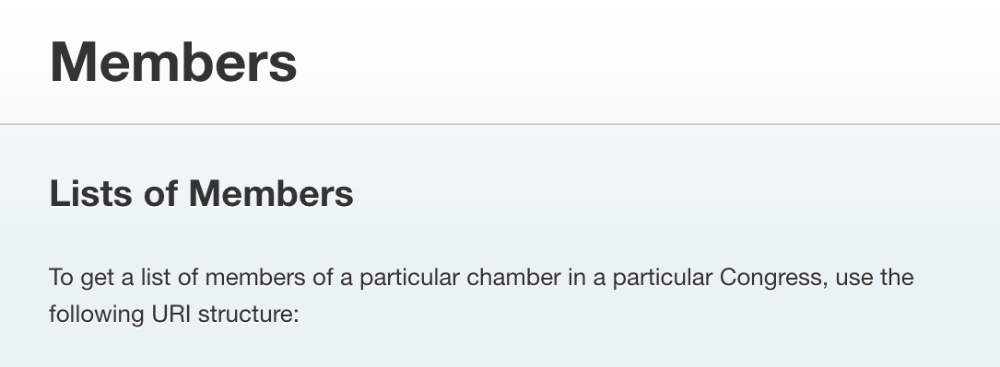
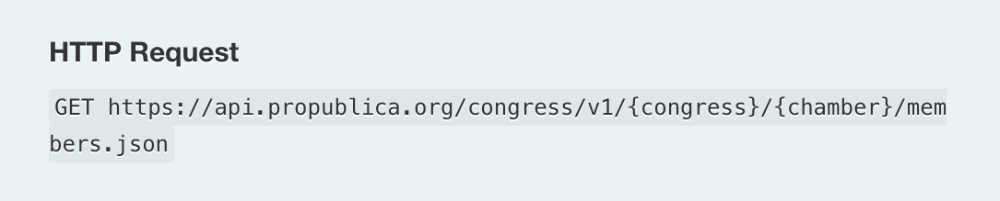
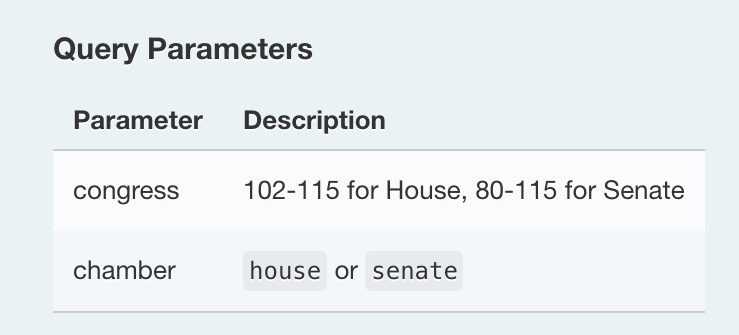
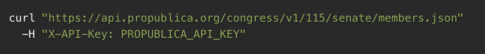
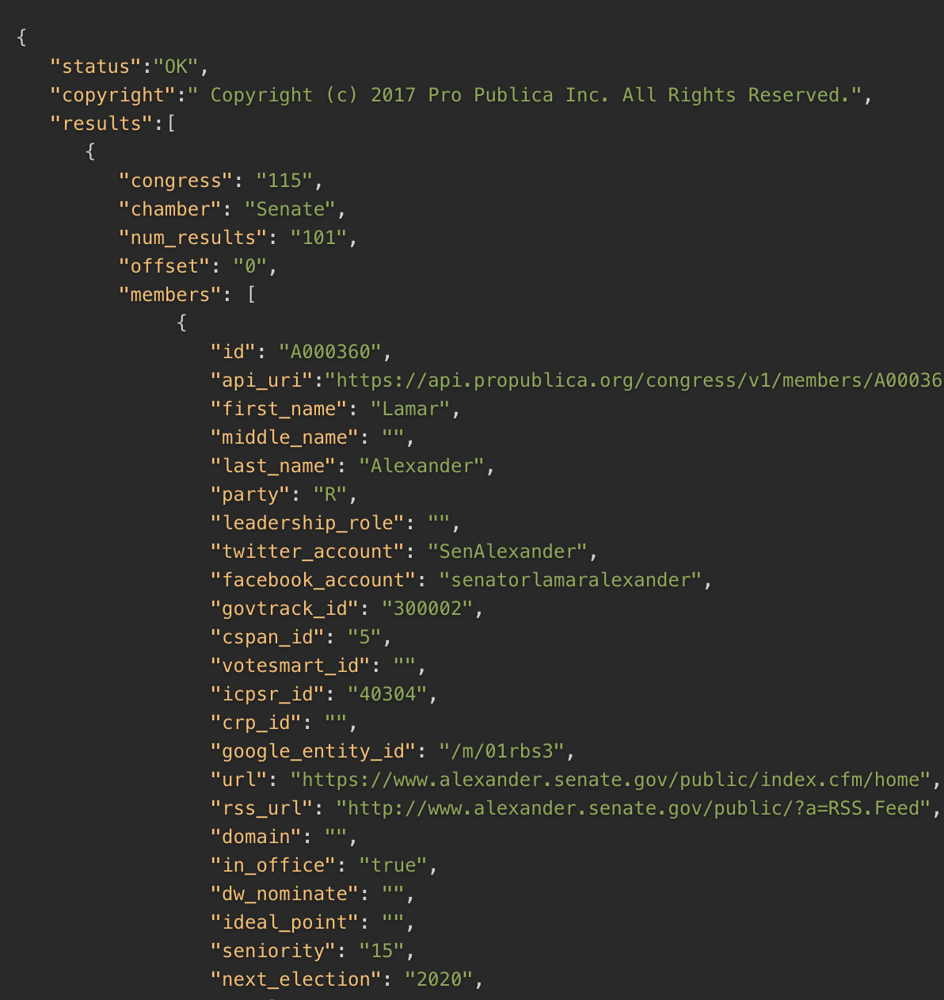

#goals:
duration: 2.5 hours
prerequisites: "data: spreadsheets to JSON workshop" or an understanding of what JSON is;
materials needed:
requests and responses (or: how computers talk to each other)
a very simplified version of how a website gets to your phone or computer:
- first, the client (your phone or computer) makes a request to a server (a computer somewhere else that has the website you want).
- then, the server serves a response back.
to summarize, clients make requests; servers serve responses.
responses and requests both include addresses so they know where to go. when you type an address into a browser search bar, you’re typing the address of the file you want on the server where it's stored.
the response the server sends back can be a website, an image, a video. in this workshop we’ll be talking about responses that are JSON data.
APIs use different addresses to serve different parts of a data set.
a close reading: the propublica congress API
let's take a close look at an API. the propublica congress API is well-documented and not evil, so we’ll use it to build as much knowledge as we can, from scratch, about APIs.
what does the documentation say?
information about what an API does is referred to as its documentation. it’s the best place to get your bearings when you’re exploring a new API. this one says:
"Using the Congress API, you can retrieve legislative data from the House of Representatives, the Senate and the Library of Congress. The API, which originated at The New York Times in 2009, includes details about members, votes, bills, nominations and other aspects of congressional activity. This document describes the requests that users can make of the API and the responses that it returns."
from the description, we learn some things about APIs in general:
- they let you retrieve data
- they come with documentation
- users make requests to the API and then the API sends back responses
with this API in particular, we'd make requests to get information about:
- members of congress
- votes
- bills
- nominations
building a query, making a request
the propublica congress API provides access to many data sets. we'll focus on the members API to keep things simple. the members API has information about how to build the address to access the data we need.

URI stands for "universal resource identifier" and it's another name for the data set's address on propublica's server.

looks like a regular web address, right? the only differences are:
- the propublica API requires a key, so you won't be able to access the data by just typing the address above into a regular browser; you'll get a message saying "forbidden". we'll talk more about keys later, but for now just think of it as a password.
- those curly brackets, which tell you that there can be multiple possible values there. you have to decide which values you want to put in; putting in different values will return different data. this is what i meant when i said above, “APIs use different addresses to serve different parts of a data set.”
for example, these three links will return different data sets because they’re (slightly) different addresses:
https://api.propublica.org/congress/v1/115/senate/members.jsonhttps://api.propublica.org/congress/v1/114/senate/members.jsonhttps://api.propublica.org/congress/v1/114/house/members.json
see the differences? the places where you have to decide the values are called parameters. programmers plug the query parameters into the address to get the response (or, data set) they need.

once you build your request address and enter it in the command line,

the response looks like this:

a close reading: the dronestream API
let's look at another API: a covert drone strike API created by data artist josh begley.

what does the documentation say?
there is no documentation! sometimes, this happens with APIs.
making a request
unlike the propublica congress API which has lots of different endpoints (addresses), the dronestream API just has one endpoint. this means you don’t have to deal with any parameters to build the address to get the data set you want; there's only one data set. the dronestream API also doesn’t require a key, so anyone can access it straight from the browser. give it a try:
http://api.dronestre.am/data
this endpoint—or address—returns raw JSON data, just like the propublica congress API. begley created this data set by going through articles from the bureau of investigative journalism and making a JSON object for each covert drone strike launched by the u.s. before begley made the dronestream API, this data set existed in articles, but not in a format that could be accessed and used in an application or data visualization.